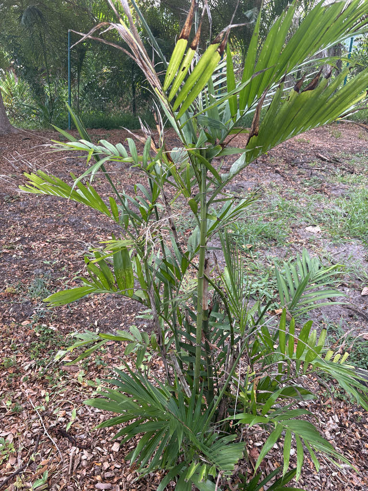

- Chamaedorea palms are the source of xate (pronounced SHA-tay), a major international trade in palm foliage harvested from Central American forests and shipped to florists and churches across North America and Europe for arrangements and Palm Sunday services. This species is not one of the main commercial ones, but its close relatives support an industry worth an estimated $140 million a year — and it is harvested from forest left standing.
- Don't let the ringed green stems fool you: this is not bamboo. Reed Palm is a true palm; bamboo is a grass. They aren't related at all — both independently evolved a narrow, jointed stem that works well for pushing leaves toward light in a shady forest. Two very different plants, one very effective design.
- Chamaedorea seifrizii was one of the plants included in NASA's famous late-1980s experiments on whether houseplants could remove certain pollutants from enclosed air. The study launched the 'air-purifying plant' idea that still sells houseplants today — though the controlled sealed-chamber conditions don't translate directly to an ordinary room.
- Chamaedorea palms have a long history of use by Maya communities in southern Mexico and Central America, long before any European botanist described them. When William Seifriz collected specimens near Chichén Itzá in the 1920s, he was working in a landscape with deep roots in that human relationship with palms — and the species now carries his name.
Native to the understory of moist woodlands and forests in southeastern Mexico — primarily the Yucatán Peninsula states of Campeche, Quintana Roo, Tabasco, and Yucatán — and south through Belize, Guatemala's Petén region, and Honduras. It grows at elevations up to about 500 meters, often on limestone soils, and tolerates disturbed habitat alongside intact forest.
William Seifriz collected specimens near Chichen Itza in the 1920s, decades before the species was formally described; the German botanist Max Burret named it in his honor in 1938. The Maya relationship with these palms long predates both men.
It arrived in Florida as an ornamental introduction and is now widely used in both indoor and outdoor plantings across the state. The Atlas of Florida Plants records it as an introduced species with cultivated occurrences throughout Florida.
- Chamaedorea seifrizii forms its dense multi-stemmed clumps through basal offshoots — new stems that emerge from the base of an established plant rather than from creeping underground runners. Nurseries sometimes crowd seedlings in a single pot to speed up the full, lush look buyers expect, but the plant builds genuine clumps on its own over time.
- Several Chamaedorea species are harvested as xate (SHA-tay), a major international trade in palm foliage with roots going back generations in Central America. The three principal commercial xate species are C. elegans, C. ernesti-augustii, and C. oblongata; their leaves are shipped internationally for floral arrangements and religious ceremonies, with over 30 million fronds exported to North America for Palm Sunday alone.
- The xate trade illustrates a genuine conservation paradox: a forest plant can be economically valuable precisely because people don't need to cut the forest down to harvest it. The leaves can theoretically be removed without killing the palm, and Chamaedorea require the shade of intact forest to thrive.
- Whether that value protects the forest depends entirely on how carefully the harvest is managed.
The Reed Palm's main wildlife contribution at Palma Sola is its fruit. The small, round drupes ripen through a sequence of green, orange-red, and finally black, and birds take them at the black stage. The fruit is eaten by birds, which may help move seeds beyond cultivated plantings — a factor worth noting given the species' documented tendency to naturalize in parts of Florida.
The small yellow flowers attract insects when in bloom. This palm has no documented role as a larval host for Florida butterflies or moths.
Propagates by seed and by division of the clump. The palm builds its multi-stemmed habit through basal offshoots — new stems that emerge from the base of an established plant, gradually widening the clump over time. Like all Chamaedorea, it is dioecious: male and female flowers are on separate individual plants, and only females set fruit.
Small, yellow, and inconspicuous, borne on branched inflorescences that emerge from the stem below the fronds — not from the crown itself, which is unusual and worth looking for. Male and female inflorescences differ in structure; female stalks often turn orange-red as the fruits develop.
Small round drupes, roughly 1 centimeter in diameter, ripening from green through orange-red to black. The flesh of ripe fruit irritates skin — the irritant is thought to be microscopic crystals in the fruit flesh; handle with gloves and wash hands after contact. Birds eat the black fruit and are the primary means of seed dispersal.
Pinnately compound (feather-palm form), deep blue-green, with lance-shaped leaflets to about 15 inches long arranged along a central rachis. Individual fronds reach roughly 2 feet in length. The foliage is the plant's main visual feature — dense, arching, and consistently tropical-looking year-round.
Slender, cane-like, and ringed with nodes in a pattern strongly reminiscent of bamboo. Stems are green when young, maturing to gray-green, and grow in dense clusters. Individual canes are typically less than an inch in diameter.
The easiest thing to notice is the clump itself — a tight mass of bamboo-like green canes topped with arching feathery fronds. Look closely at a stem and you will see the distinct rings, or nodes, that give it the bamboo resemblance.
Then look below the lowest frond for the flower stalks, which emerge directly from the cane rather than from the crown above — that is the detail that surprises most visitors. On a female plant those stalks are followed by small round berries that move from green to orange-red and eventually black as they ripen.
The ripe black fruit can irritate skin, likely from microscopic crystals in the flesh — avoid handling crushed berries with bare hands and wash after any contact with the fruit. The plant is not considered poisonous to people, and the ASPCA lists Chamaedorea as non-toxic to dogs and cats; the fruit is an irritant, not a toxin.
The species is rated USDA Hardiness Zones 10–12 by most references; at Bradenton (Zone 10A), established plants in sheltered positions typically do well, but an unusually cold winter can damage or defoliate them. New growth usually resumes from the base if the cold is not prolonged.
Because it naturalizes by bird-dispersed seed in disturbed habitats, the park's specimen should be monitored for seedlings beyond the planted area, particularly near any adjacent natural vegetation.


- © Randall Carter (CC-BY-NC), via iNaturalist